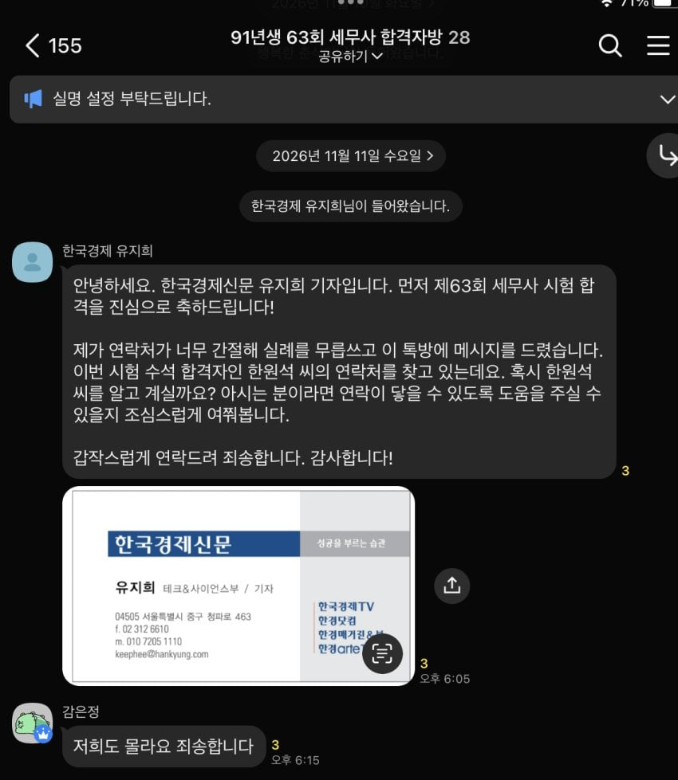

현직 기자분들이 합격자 단톡방와서 정보 구해가는 중 ㅎㄷㄷ

현직 기자분들이 합격자 단톡방와서 정보 구해가는 중 ㅎㄷㄷ
전부터 얘기 나온 건데, 구체적으로 입력할 자료를 세무사 쪽에서 제공해줘야 하는데 그게 안 돼서 못 하고 있단 얘길 본 거 같음
나 상법은 세무사, 회계사시험 둘다 90점대 맞아서 이건 그럴수 있다 치는데
특히 '재정학' '세법' 만점은 정말 엄청나네...
1차 시험이야 그럴 수 있는데 2차시험도 초고득점이라 말이안됨
중급닌자시험 시대가 왔다
현장에서 못 잡았으면 끝난거지 뭐 어쩔건데
늦게 공부머리 트인 천재일수도있지 시기질투들은 어휴 ㅇㅇ
티 안나게 하는사람들도 꽤 되겠는데?
경찰이 압수수색해서, 구매내역이랑 검색기록 같은거 뒤질 수 있나?
이미 다 삭제할거 했겠지만
재시험 얘기 나올까봐 합격 단톡방은 저거 싫어한다는 얘기가 있던데
현직 회계사인데 난 개인적으로 200% 부정행위같다고 느낀다
누가그랬지 100m 5초에 달린거라고
걍 현직자들 회계사 세무사 다 똑같이생각할걸?
이건 100점맞으라고 보는 시험이 아니고
날고기는 서울대괴물수석도 회계사1차 평균 90점대초반임, 참고로 세무사 1차합격컷은 평균60점. 회계사는 상대평가라 케바케지만 대충 6~70점(요새는 과목이 바뀌어서 몰루)
그런데 이번에 이슈된 사람은 세무사1차성적이 평균 99.3점임 99.3 아예 시험에 대한 감이 없으니 미친수준으로 오버한거지
그것도 상경계열도 아니고 공고 - 경력으로 과기대 들어간 사람이 갑자기 마음잡고 회시 세시 들어와서 저런 성적을? "로봇공학업체"에서 일하다?
난 회시 재무관리나 재정학 쌀집계산기로 풀어야하는데
그래프를 머리에 그렸다부터 좀 냄새 났음
반대로 말하면, 그 세무사 자격을 줄 수 있는 시험은 AI 딸깍으로 통과할 수 있는 시험이었다는 뜻이잖아?
세무사를 AI로 대체할 가능성이 있다는 뜻 아님? (수능, 토익, 각종 자격시험을 AI 안경으로 치며)